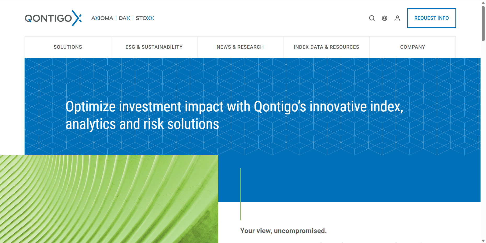
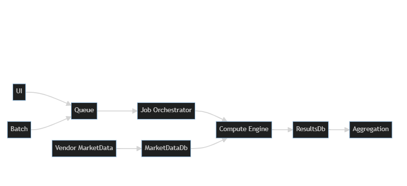

25 Julio 2023, ECI UBA
Associate Principal, Core Analytics

Index (Stoxx)
Analytics (Axioma)
Portfolio Optimizer
Axioma Risk

Dev - DBA - Researcher - DevOps - Quant - QuantDev
- m. Distinción y separación de las partes de algo para conocer su composición.
- m. Estudio detallado de algo,…
Ciencias
- f. Composición de un todo por la reunión de sus partes.
- f. Suma y compendio de una materia u otra cosa.
Construir, componer
Maximizar el tiempo que lxs Devs dedican a desarrollar código nuevo.
Minimizar el tiempo utilizado en configurar las herramientas de trabajo
Minimizar las regresiones y nuevos defectos al tener un E2E testing sencillo.
Verificar que los cambios se pueden compilar y están libres de errores de sintaxis.
Verificar que todos los tests automáticos pasan
Simular una ejecución de E2E en un ambiente deployado
bashMuchas Gracias.
Visiten nuestro stand